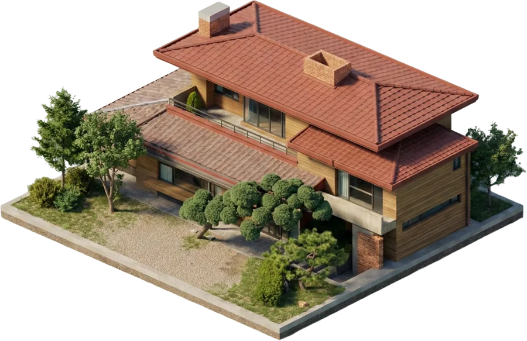
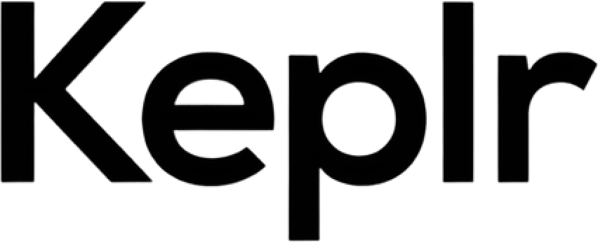
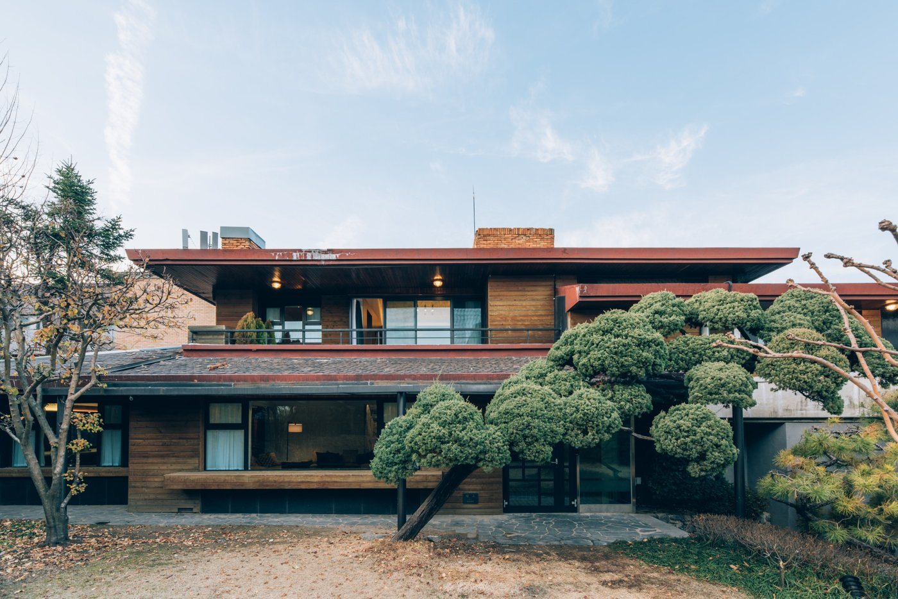
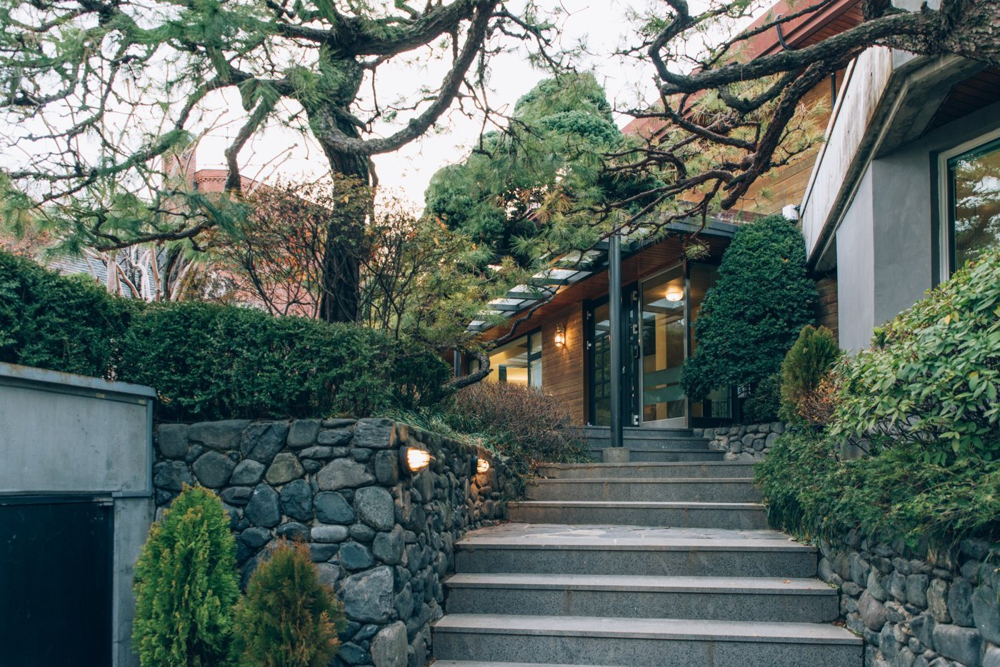
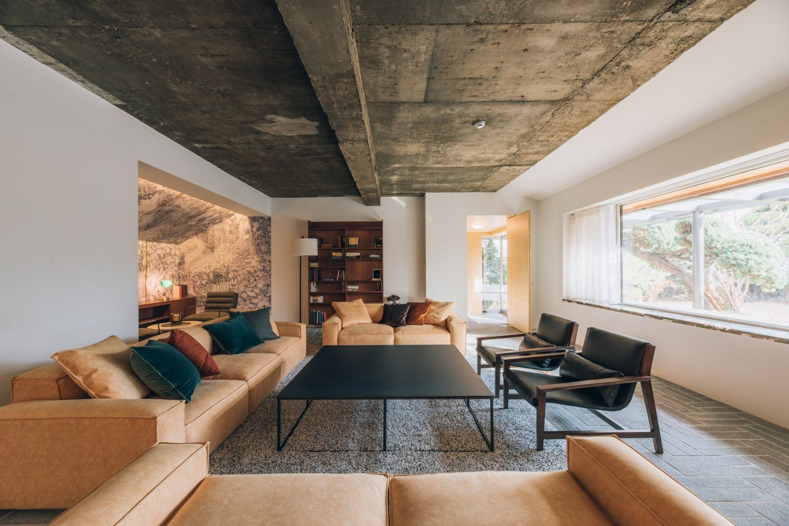
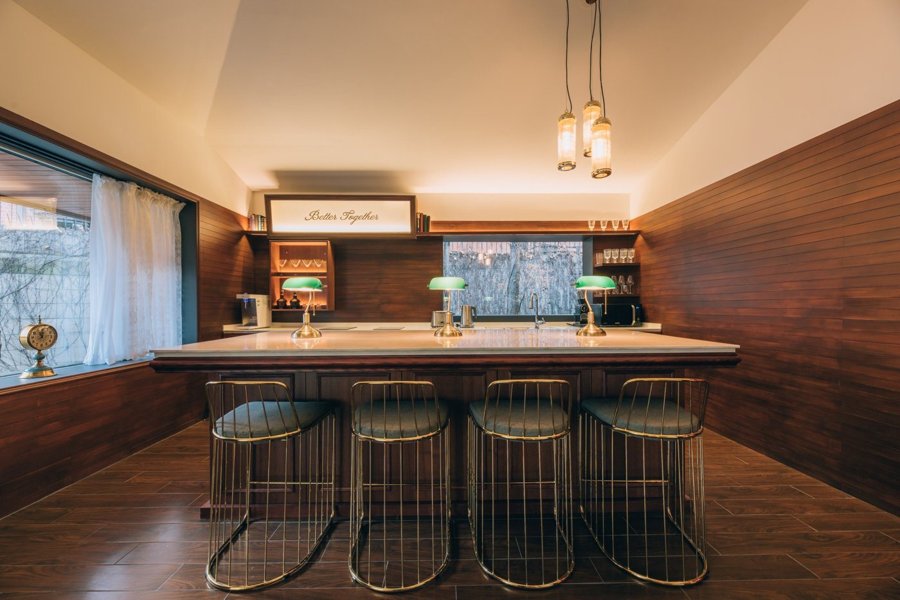

Nonce Sapiens
- NAME
- 논스 사피엔스 (前 4호점)
- TYPE
- CO-LIVING
- PHILOSOPHY
- 진정한 대화를 통해 성장하는 사피엔스의 삶
- TECHNOLOGY
- 하이엔드 살롱 문화로 설계된 커뮤니티 구조하이엔드 살롱 문화로
설계된 커뮤니티 구조 - YEAR
- 2019 ~ 2022
- PEOPLE
- 48
Introduction
논스 커뮤니티의 라이프스타일 블록
유발 하라리는 인간의 언어가 정보 전달이 아니라 수다를 떨고 관계를 형성하기 위해 진화했다고 말합니다. 사피엔스는 이 관점을 생활 공간으로 옮긴 하우스입니다.
타 호점 대비 넓고 쾌적한 정원과 라운지, 키친을 중심으로 사람들이 자연스럽게 모이고 머무는 구조로 설계되었습니다. 별도의 프로그램 없이도 함께 요리하고, 술잔을 기울이며, 대화가 시작되는 살롱 같은 일상. 사피엔스는 혼자 살아온 삶에서 벗어나 건강한 공동체를 경험하고 싶은 사람들을 위한 라이프스타일 커뮤니티입니다.
Philosophy
진정한 대화를 통해 성장하는 사피엔스의 삶
사피엔스의 철학은 인간을 무엇보다 사회적 동물로 바라보는 관점에서 시작합니다.
유발 하라리는 『사피엔스』에서 인간의 언어가 진화한 이유를 단순한 정보 전달이 아니라 소문을 나누고, 수다를 떨며, 관계를 형성하기 위함이라고 설명합니다. 그리고 이러한 사회적 협력이 인류의 생존과 번식에 핵심적인 역할을 했다고 말합니다. 논스 사피엔스는 이 관점을 생활 공간으로 옮긴 하우스입니다.
이곳의 사람들은 혼자만의 성취보다 함께 나누는 대화를 통해 성장하는 삶을 선호합니다. 의미 있는 대화가 쌓이고, 서로의 생각과 세계관이 교차하며, 자연스럽게 삶의 방향이 확장됩니다. 사피엔스는 대화를 통해 관계가 형성되고, 관계를 통해 사람이 성장할 수 있다는 믿음을 공간과 생활 속에서 구현한 커뮤니티 하우스입니다.
Technology
하이엔드 살롱 문화로 설계된 커뮤니티 구조
사피엔스의 기술은 정교한 규칙이나 시스템이 아니라 사람을 모이게 만드는 구조입니다. 타 호점 대비 상대적으로 하이엔드 퀄리티로 조성된 정원과 라운지, 그리고 키친을 중심으로 한 공간 구성은 사람들이 자연스럽게 한 공간에 머물도록 만듭니다. 함께 요리하고, 술을 마시며, 자연스럽게 대화를 나누는 살롱 문화가 사피엔스의 일상 속에 자리 잡았습니다.
이곳에서는 의도적으로 프로그램을 만들지 않아도 대화가 시작되고, 관계가 이어집니다. 건강한 대화는 사피엔스 커뮤니티가 유지되는 가장 중요한 리추얼입니다.
사피엔스는 혼자 살아온 삶에서 벗어나 건강한 공동체 문화를 기대하는 사람들에게 하나의 삶의 선택지로 제안된 논스의 라이프스타일 커뮤니티 모델입니다.
Results



See More



